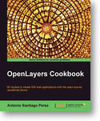
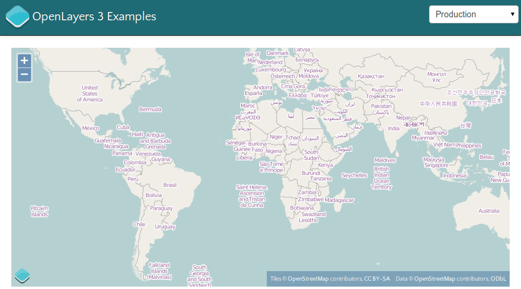

OpenLayers 3
Einführung, Verwendungsbeispiele
und technische Highlights
Marc Jansen, terrestris
Andreas Hocevar, Boundless
ol3
Was? Wie?
& Warum?
Marc Jansen, terrestris
Andreas Hocevar, Boundless
Gliederung
- Über …
- OpenLayers
- ol3
- Altes & Neues
- Beispiele
- Highlights
- Fazit & Ausblick
Über uns
ol3-Kernentwickler


Über terrestris
- terrestris.de
- OpenSource GIS aus Bonn
- Entwicklung, Projekte & Support/Schulung
- Beratung, Planung, Implementierung & Wartung
Über Boundless
- boundlessgeo.com
- TODO AH
- TODO AH
- TODO AH
Über diesen Vortrag
- Highlights
- Beispiele
- Live-Demos
- Code-Snippets
- v3.0.0.beta2
Altes & Neues
OpenLayers
-
Sehr verbreitete JavaScript-Bibliothek für
dynamische & webbasierte Kartenanwendungen
- v. 2.0 ⇒ 7,5 Jahre alt

OpenLayers
- 12 Punkt-Releases
- > 6.000 Commits, ~100 Beitragende
- Zahlreiche Features:
- Layertypen,
- Controls,
- Formate,
- Mobile …



Aber…
- ~7 Jahre alte Architektur
- Modernste Web-Technologien
- Moderne Browser


…daher…
Wir wollen ein neues OpenLayers!
ol3
- in Entwicklung seit ~ 1,5 Jahren
- teilweise crowd-funded
- bislang 4 alpha & 2 beta-Releases
- ol3js.org
- Google-Group / Mailingliste
- Github repository
Was ist neu?
- de facto: Alles
- Kompletter rewrite-from-scratch
- teilweise Tests (Daten) übernommen
Was ist neu?
- Google Closure Bibliothek (Gmail, Google Maps)
- Google Closure Compiler
- jsdoc3
- WebGL
- Mobile first / from start
- Styling ausschließlich CSS
Closure Compiler
goog.provide('ANamespace.ASubNamespace.AClass');
ANamespace.ASubNamespace.AClass = function() {
this.aProperty = 'prop1';
};
ANamespace.ASubNamespace.AClass.prototype.aMethod =
function() {
this.aProperty = 'change';
};
var anInstance = new ANamespace.ASubNamespace.AClass();
anInstance.aMethod();
window.b=new function(){this.a="prop1"};window.b.a="change";

Was bleibt gleich?
- Vielseitig verwendbar
- Modern implementiert
- Performant programmiert
- Erweiter- und anpassbar
Was bleibt gleich?
- Einfach zu verstehen
- Standardkonform
- Cross-Anything (Browser, Plattform & Endgerät)
- Vollständig dokumentiert
- Verlässlich in der Verwendung
Beispiele
Hallo, Welt
 ol3js.org/en/master/examples/simple.htmlCode
var map = new ol.Map({
layers: [
new ol.layer.Tile({
source: new ol.source.OSM()
})
],
target: 'map',
view: new ol.View2D({
center: [0, 0],
zoom: 2
})
});
OpenLayers 2.x
-
1 ×
OpenLayers.Map-
n ×
OpenLayers.Layer.Xxx -
n ×
OpenLayers.Control.Yyy
-
n ×
ol3
-
1 ×
ol.Map-
1 ×
ol.View(2D/3D) -
n ×
ol.interaction.Zzz -
n ×
ol.control.Yyy -
n ×
ol.layer.Xxx-
1 ×
ol.source.Xxx
-
1 ×
-
1 ×
50.000 Koordinaten
ol3js.org/en/master/examples/igc.htmlCode
var vectorSource = new ol.source.IGC({
urls: [
'data/igc/ClementÂLatour.igc' // etc.
]
});
var styleFunction = function(feature, resolution) {
// ...
return styleArray;
};
var layer = new ol.layer.Vector({
source: vectorSource,
styleFunction: styleFunction
});
Drag & Drop / Formate
ol3js.org/en/master/examples/drag-and-drop.htmlCode 1
// Erzeugung einer spezifischen Interaktion:
var dragAndDropInteraction = new ol.interaction.DragAndDrop({
formatConstructors: [
ol.format.GPX,
ol.format.GeoJSON // ..
]
});
// Erweitern der Standardinteraktionen &
// Erzeugung der Karte mit den InteraktionenÂ
var interactions = ol.interaction.defaults();Â
var map = new ol.Map({Â
interactions: interactions.extend([ dragNDropInteraction ]),Â
//Â ...Â
}
Code 2
dragAndDropInteraction.on('addfeatures', function(event) {
var vectorSource = new ol.source.Vector({
features: event.features,
projection: event.projection
});
map.getLayers().push(new ol.layer.Vector({
source: vectorSource,
style: styleFunction
}));
var view2D = map.getView().getView2D();
view2D.fitExtent(vectorSource.getExtent(), map.getSize());
});
Technische Highlights
Performance Replay-API
http://ol3js.org/en/master/examples/fractal.html786.433 Punkte!
Fazit & Ausblick
Ready for production?
- Klares Jein
- Beta: API kann und wird sich ändern
- Zusammenspiel mit Bibliotheken
Ready for production?
map.geo.admin.ch , CodeZukunft / Roadmap
- WebGL-Vektoren
- API Review
- API Stabilität
- API Dokumentation
- Kollaboration vereinfachen
- Custom-build-Tool
- …
… und dann …
v3.0.0 final
… bald 😇
Vielen Dank für die Aufmerksamkeit
Fragen & Anmerkungen?
Impressum
- Autoren:
- Marc Jansen, terrestris GmbH & Co. KG, jansen@terrestris.de
- Andreas Hocevar, Boundless, ahocevar@boundlessgeo.com
- Lizenz: CC BY-SA 3.0
- Vortragsfolien
- Langfassung